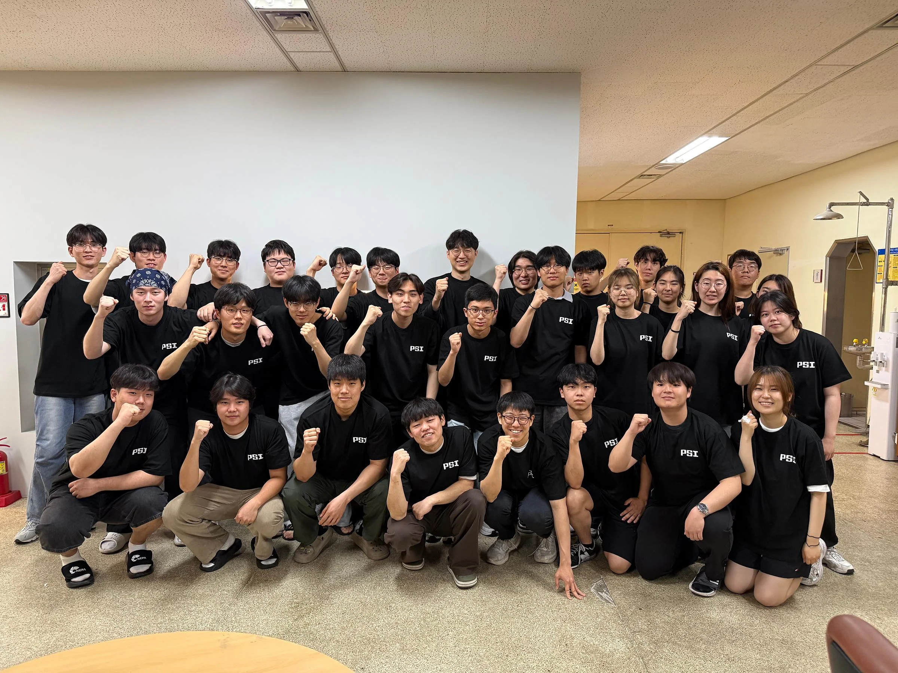
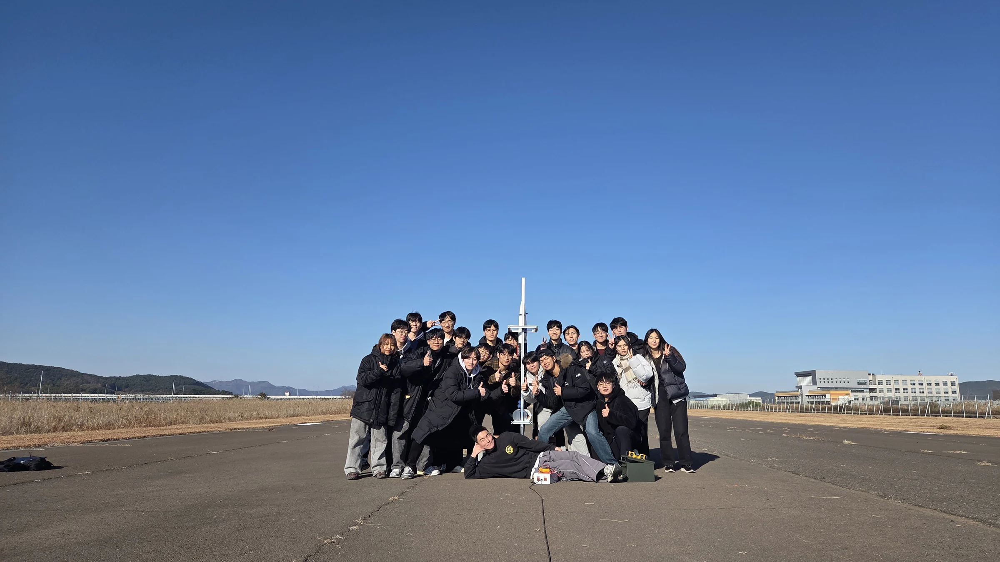

Research division
Five research teams are described in the September 2026 introduction. Teams work through the year, report progress and prepare conference presentations.
PSI is a student aerospace research group in POSTECH Mechanical Engineering. We run rocket and aircraft projects, conduct research throughout the year and help students take part through education.


How PSI began
Students began preparing the programme in 2023. PSI’s organisation record gives 20 February 2024 as its founding date; the group adopted its present research-group name in 2025.
The founder’s first-person account, published by POSTECH in May 2026, describes how students brought the programme together.
Read the founder’s storyResearch and competition activity are supported by people who maintain equipment, manage the budget, communicate the work and help newcomers learn.
Five research teams are described in the September 2026 introduction. Teams work through the year, report progress and prepare conference presentations.
The Rocket Team develops and launches solid rockets for NURA activity. The Aircraft Team designs and fabricates quadrotor and VTOL aircraft.
Equipment, workspace and documentation for competitions, conferences and launches.
Manage the club budget and record activity expenses.
Activity stories, recruitment announcements, member events and connections.
Newcomer learning, Freshman Research Participation and internal seminars.

For current openings, eligibility, dates and introductory requirements, see the latest recruitment notice on PSI’s official channels.
View announcements on InstagramRecruitment schedules are announced for each round.

See the current recruitment notice for eligibility and course requirements.
Read about a project or open a PSIntelligence notebook to explore your interests.
Follow the recruitment route, then take part in newcomer learning, practical work and member activities.
Build experience in group activity and discuss a research or competition interest with the team. Research-team participation is a further step.
PSI provides newcomer education, practical learning and seminars. Check the latest recruitment notice for current prerequisites.
See the latest official recruitment notice for eligible academic affiliations and introductory requirements. These may vary by recruitment round.
Research-team placement is a later step, not automatic. New members first take part in learning and group activities. Active research participation and a team leader’s recommendation can support a later move into a research team.
No. The Aircraft Team designs and fabricates quadrotor and VTOL aircraft, and the research archive includes aircraft stability, education and other aerospace questions.
Use the current group announcement. General meetings and research meetings have different purposes and may use different arrangements, so a permanent room or time is not listed here.
Find recruitment and activity updates on the official channels and technical details in the relevant public repository.
Newcomer education, Freshman Research Participation and member seminars offer a way into the work. PSIntelligence provides public notebooks on probability, Kalman filtering, state estimation and apogee prediction. Research-team participation is a later step.
Open PSIntelligence notebooks